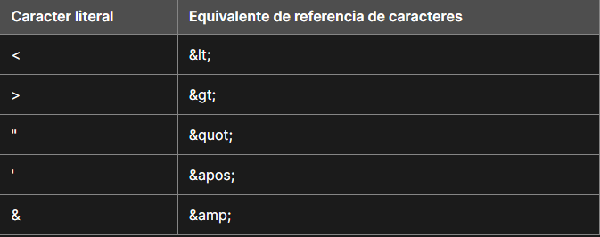
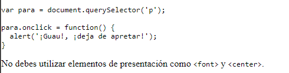

Visualizar codigo en la paguina
En ocaciones pudiese ser necesario representar algun codigo para el usuario, pero al tratarse de simbolos interpretados por el navegador no es posible incorporarlos sin más en el texto, para esto se utilizan diveroso metodos que seran desenglosados a continuación:
Inclusión de caracteres especiales en HTML
Algunos simbolos forman parte de la sintaxis del codigo html, estos son llamados caracteres especiales, por ello para hacer posible su integraciaon a un texto, si se diese el caso, se crearon unos valores referenciales que al ser interpretados por el navegador arrojan como resultado dichos simbolos especiales
Representar codigo Informatico
Para estos casos se utilizan las siguientes etiquetas:
code: Esta etiqueta se utiliza para mostrar literalmente el codigo que esta etiqueta encapsule, en otras palabras cualquier codigo que se escriba dentro de esta etiqueta no sera interpretado por el navegador, si no que a su vez sera mostrado al usuario
pre: por defecto el navegador no tiene en cuanta los espacios en blanco extra que se ingresen en el codigo, sin embargo justo ese es el efecto de esta biñeta, en el texto que se ingrese en el interior de esta el navegador plasmara toda la estructura, incluyendo saltos de linea y tab entre otros
kbd: Esta etiqueta muestra al texto dentro de esta con una fuente que se reserva particularmete para representar entradas de datos en el teclado o en el navegador (comandos de teclas)
samp: Esta etiqueta muestra al texto dentro de esta con una fuente que se reserva particularmente para representar salidas de datos de un programa del navegador
Ejemplos de las biñetas
Codigo:


visualización
